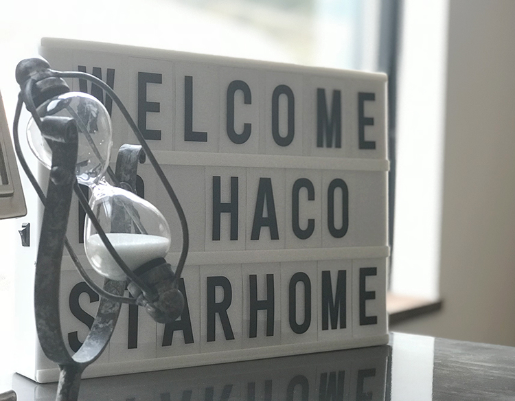
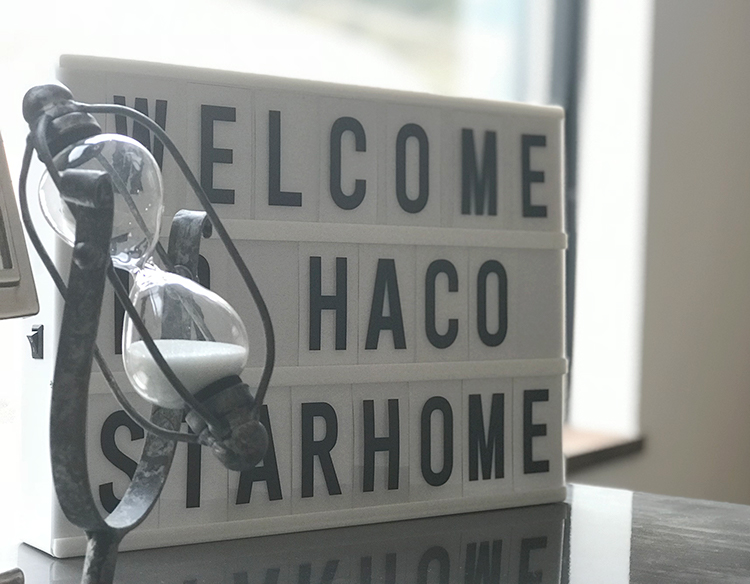
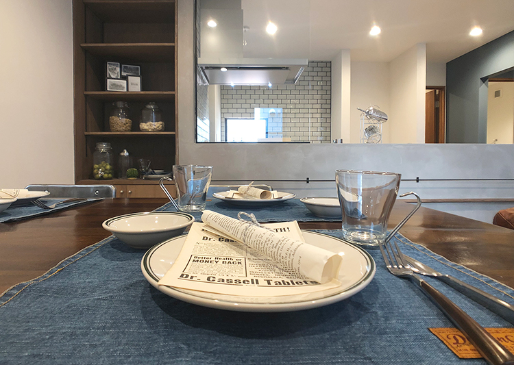
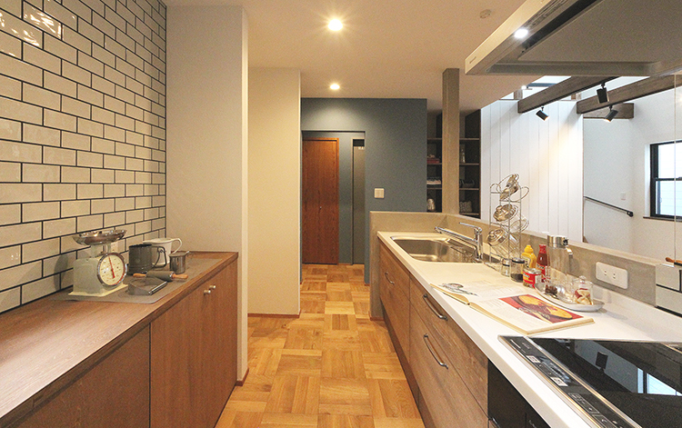
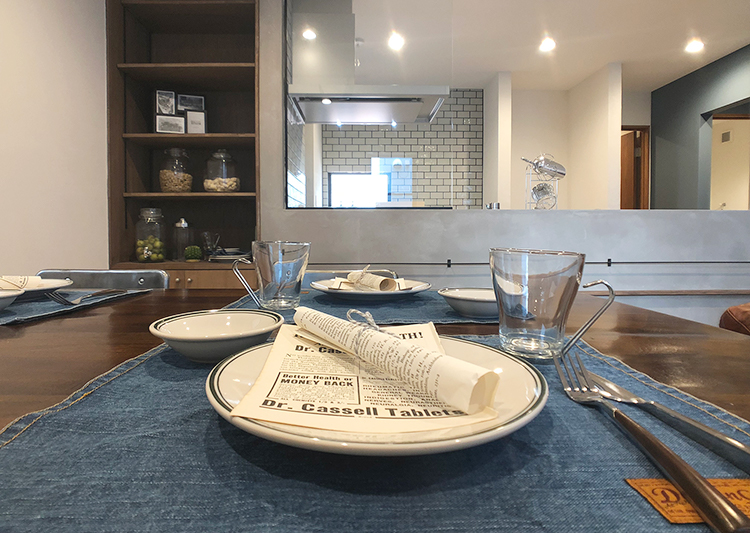
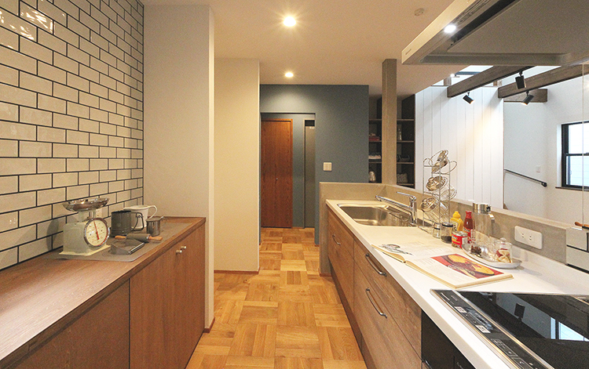

Hacoとは
 

 



Hacoとは
無垢の床、無垢の壁、洗練された
ブルックリンスタイル
価格帯が分かりやすく、お客様が
選びやすい間取りのオーダーが
可能なセミオーダー住宅
となっております。
ブルックリンスタイル
ブルックリンスタイルとは
ブラック、スモーキーカラーなど明度の低いアイテムを
取り入れたスタイル。
ブルックリンはNY州5区の一つで、
ラグジュアリーなマンハッタンとは対照的に
倉庫や古いアパートが立ち並ぶ街がブルックリン地区です。
流行最先端の街でありながら、古いものを
活かして楽しむインテリアの考えがあります。
- ✓素材がヴィンテージ
- ✓壁やレンガがコンクリート
- ✓全体的に見て明度が低い
- ✓間取りに開放感がある
- ✓DIYに向いている
- ✓間取りやオプションが自由
- ✓高い耐震性
- ✓予算を調整できる
葉山とは
葉山は海がきれい、
空気がおいしい、自然に囲まれている、
子育てにも優しい素晴らしい土地です。
そんな葉山に住んでみませんか？
- ✓海・山がある
- ✓自然豊かで解放感がある
- ✓子育ての環境にいい
- ✓都会からのアクセスがいい
葉山の名所案内
葉山のおすすめのスポットなどをマッピングしました。
ピンをクリックすると画像とテキストを見ることができます。